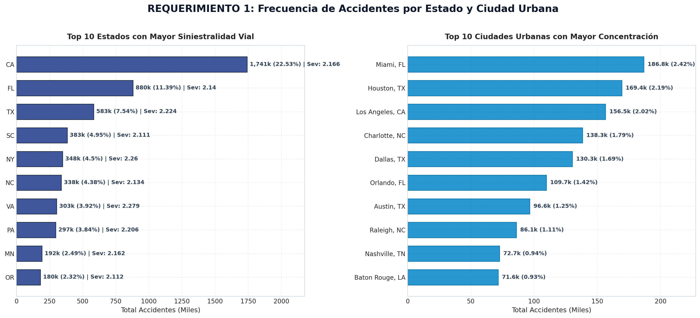
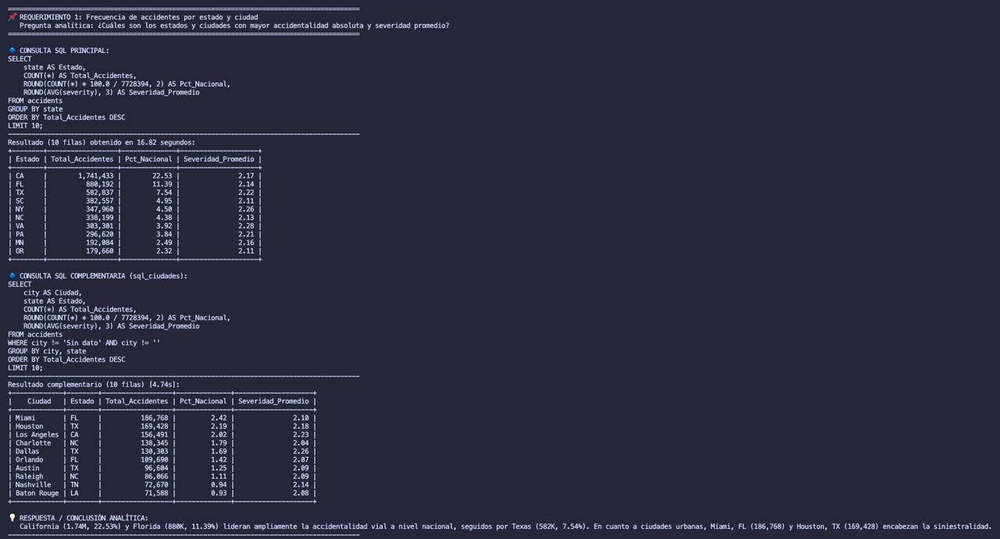

01
state, city, severity
Frecuencia de Accidentes por Estado y Ciudad
Pregunta de negocio: ¿Cuáles son las entidades geográficas y áreas metropolitanas con mayor siniestralidad absoluta y qué severidad promedio experimentan?
Top 1 Estado
California (CA)
1.74M (22.53%)
Top 2 Estado
Florida (FL)
880K (11.39%)
Top Ciudad Urbana
Miami, FL
186,768 (2.42%)
Top 2 Ciudad
Houston, TX
169,428 (2.19%)
Respuesta & Hallazgo Clave
California y Florida concentran más de un tercio (33.92%) de la siniestralidad total nacional debido a su alta densidad demográfica y extensa red vial interestatal. En el ámbito urbano, Miami (FL), Houston (TX), Los Ángeles (CA), Charlotte (NC) y Dallas (TX) lideran el ranking de concentración de accidentes. La severidad promedio en Virginia (2.28) y Texas (2.22) supera al promedio nacional.
Gráfica Analítica (Python Matplotlib/Seaborn)
Ampliar

Evidencia en Terminal SQL
Ver terminal

Consulta SQL (Optimizada con Índices SQLite / DuckDB / PySpark)
-- Requerimiento 1: Frecuencia de accidentes por Estado y Ciudad
SELECT
state,
city,
COUNT(*) AS total_accidentes,
ROUND(COUNT(*) * 100.0 / (SELECT COUNT(*) FROM us_accidents_limpio), 2) AS porcentaje_nacional,
ROUND(AVG(severity), 2) AS severidad_promedio
FROM us_accidents_limpio
WHERE state IS NOT NULL AND city IS NOT NULL
GROUP BY state, city
ORDER BY total_accidentes DESC
LIMIT 15;